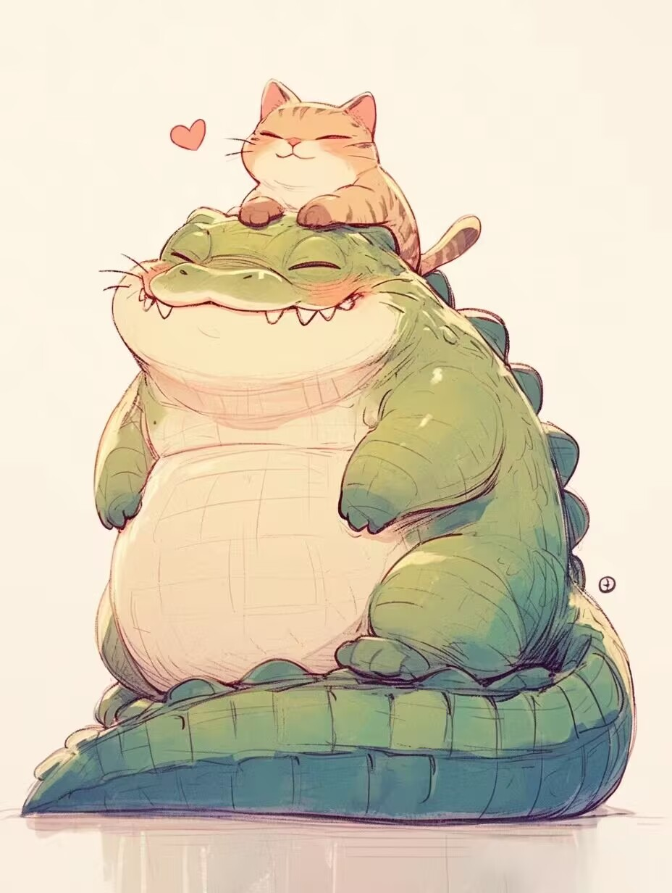
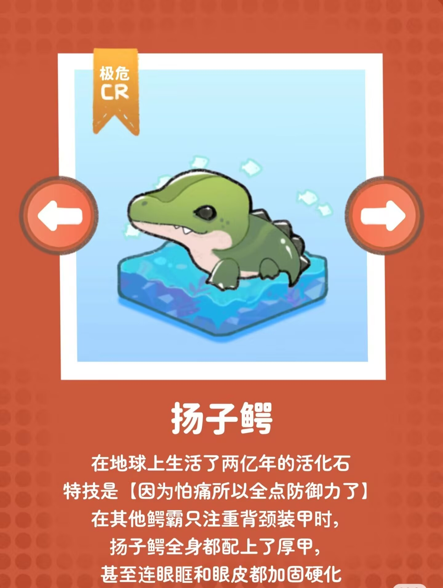
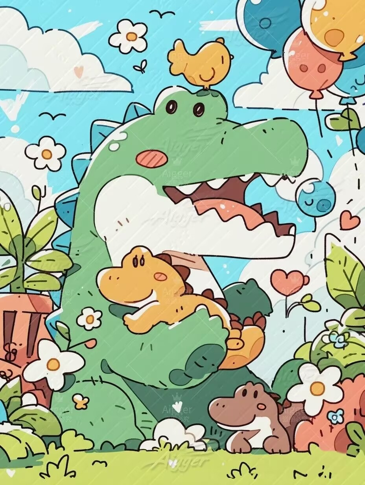

| 首页 | 全球动物保护日历 | 濒危动物图鉴 | 国际上采取措施 | 行动指南 | Every Live Is A Part Of The Planet We Called Earth. |
 扬子鳄想对你说： “请保护我们的长江家园，让我们与你们共同守护这片古老的水域。” |
 |  扬子鳄，古代被称作鼍（tuó），民间俗称“土龙”或“猪婆龙”，是中国特有的一种小型鳄类，被列为国家一级重点保护野外动物。 历史上，扬子鳄曾广泛分布于中国东部的黄河、淮河、长江和钱塘江等流域。随着人类活动和气候变化逐渐收缩至长江下游流域。目前，扬子鳄的生存状况十分濒危，野外种群数量总数小于300只，其中成年个体不足100只。野外种群几乎全分布于安徽省南部5个县区构成的扬子鳄国家级保护区中，被分割为大约20个相互隔离的小种群。扬子鳄在人工圈养条件下的繁殖已十分成熟，目前安徽宣州和浙江长兴的两个繁殖基地共保有约2.5万人工繁育的扬子鳄。野外适宜栖息地的丧失和破碎化是扬子鳄目前面临的最大威胁，也是其种群自然恢复和人工繁育个体重引入的最大障碍。 |
| 首页 | 全球动物保护日历 | 濒危动物图鉴 | 国际上采取措施 | 行动指南 | We All Live In The Same Earth , Breathe The Same Air. |